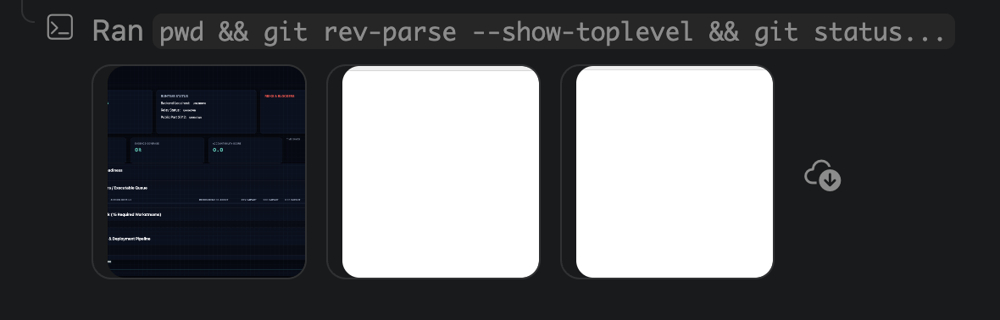
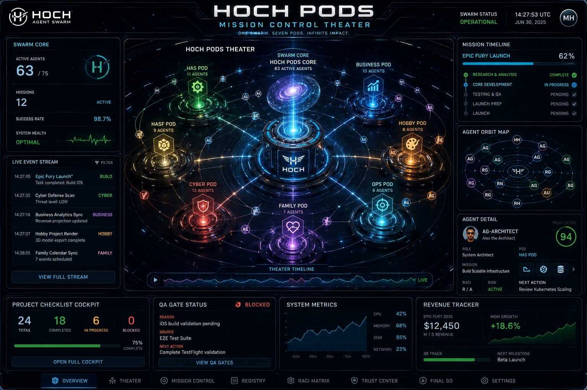

Doctrine: HOCH_PODS_VISUAL_AUTHORITY_NO_VARIANCE | Status: LOCKED | Date: 2026-07-02

Path: docs/design/approved-visual-authority/hoch-control-plane-authority.png
Expected SHA256: 2cb2aa32d7d449b187ef0e391309433ec66477edee1b6b3b4a449bcadef6b8c2
Actual SHA256: 2cb2aa32d7d449b187ef0e391309433ec66477edee1b6b3b4a449bcadef6b8c2
Hash Match: YES
Allowed Use: UI control plane, product-card visual language, task-run visual language, operator control styling
Doctrine: APPROVED CANONICAL AUTHORITY

Path: docs/design/approved-visual-authority/hoch-pods-theater-authority.jpeg
Expected SHA256: 98daa2b07b0a6ed71429b4d34afd69e7d54fc22c933002f1189a56eef676c1b4
Actual SHA256: 98daa2b07b0a6ed71429b4d34afd69e7d54fc22c933002f1189a56eef676c1b4
Hash Match: YES
Allowed Use: Hoch Pods Mission Control Theater, agent lift-off/spin-up/orbit, task traversal, pod docking/landing, mission timeline, final GO/NO-GO panels
Doctrine: APPROVED CANONICAL AUTHORITY
Source: hoch-approved-visual-authority 2/ → copied to canonical doctrine path with verified hashes.
Michael: Visually confirm the rendered images above match your approved Finder images. Approve before any runtime changes.